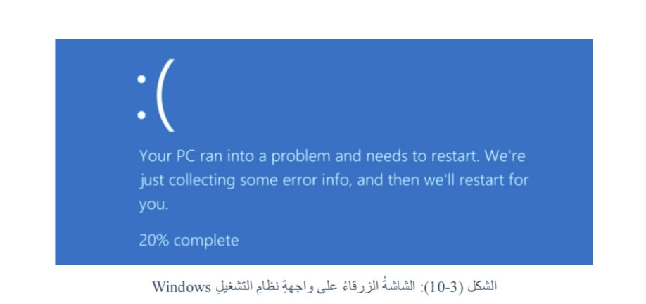

السؤال الأول: أعرف المقصود بكل من المصطلحات الآتية:
1. الصيانة العلاجية.
صيانة الأعطال عند حدوثها فعليًا، بتحديد العطل ونوعه ومكانه وأسبابه، ثم إصلاحه أو تبديل الجزء التالف.
2. بطاقة الشاشة.
بطاقة إلكترونية توضع في أحد شقوق اللوحة الأم، وتتضمن منفذًا لتوصيل كابل الشاشة، وتعتمد سرعة أدائها بدرجة كبيرة على الذاكرة.
3. نظام التشغيل.
برنامج أساسي يدير جهاز الحاسوب، ويعمل وسيطًا بين المستخدم ومكونات الحاسوب.
4. النسخ الاحتياطي السحابي.
الاحتفاظ بنسخ البيانات على مساحة تخزينية عبر الإنترنت؛ لضمان سلامتها عند تعرض جهاز الحاسوب للمشكلات والمخاطر.
5. القرص الثابت (SSD).
من أهم أدوات التخزين في الحاسوب، ويمتاز عن القرص الصلب HDD بسرعة قراءة وكتابة فائقة.
السؤال الثاني: أضع إشارة (✓) بجانب العبارة الصحيحة، وإشارة (✗) بجانب العبارة غير الصحيحة:
1. من إجراءات صيانة المكونات المادية ملاحظة مراوح التبريد من حيث السرعة وانتظام عملها وصوتها.
الإجابة: ✓ صحيحة.
2. تساعد أداة تشخيص الذاكرة لـ Windows في فحص ذاكرة الوصول العشوائي RAM.
الإجابة: ✓ صحيحة.
3. الصيانة التنبؤية شكل متقدم من الصيانة الوقائية، تستخدم علم البيانات والتحليلات التكيفية لتقدير وقت توقف المعدات أو البرامج.
الإجابة: ✓ صحيحة.
4. أحد أسباب بطء جهاز الحاسوب عدم توافر مساحة كافية في القرص الصلب.
الإجابة: ✓ صحيحة.
5. أحد أسباب ظهور خطوط صورة الشاشة وتموجها عطل في كابل الطاقة للشاشة.
الإجابة: ✗ غير صحيحة.
6. يجب استبدال حبر الطابعة عندما تصبح الألوان باهتة جدًا.
الإجابة: ✓ صحيحة.
7. تستهلك جميع الأجزاء المعدنية المتحركة لمحرك الأقراص SSD قدرًا كبيرًا من الطاقة وتولد حرارة كبيرة.
الإجابة: ✗ غير صحيحة.
8. تتحول أقراص SSD إلى ذاكرة RAM عندما تكون سعة ذاكرة RAM غير كافية.
الإجابة: ✗ غير صحيحة.
9. لا تُستخدم منظفات سائلة أو غازية قد تحتوي على مواد قابلة للاشتعال عند تنظيف جهاز الحاسوب.
الإجابة: ✓ صحيحة.
10. تتسبب الفيروسات والبرامج الضارة في استهلاك الذاكرة والمعالج، وتؤدي إلى بطء جهاز الحاسوب.
الإجابة: ✓ صحيحة.
السؤال الثالث: أجيب عن الأسئلة المتعلقة بالشاشة السابقة:

1. ماذا يُطلق على الشاشة السابقة؟
الشاشة الزرقاء.
2. أذكر سبب ظهور هذه الشاشة.
وجود خلل في النظام، سواء في المكونات المادية أو البرمجية.
3. ما الإجراءات الواجب اتباعها عند ظهور هذه الشاشة؟
- إزالة أي جهاز ملحق جديد بعد إيقاف تشغيل الحاسوب، ثم إعادة تشغيله.
- فحص إدارة الأجهزة (Device Manager)، وتحديث برنامج تشغيل الجهاز الذي تظهر عليه علامة تعجب، أو تعطيله أو إلغاء تثبيته إذا لم تنجح عملية التحديث.
- التحقق من وجود مساحة كافية في القرص الصلب.
- تحديث نظام التشغيل Windows.
- استعادة النظام باستخدام نقطة استعادة سابقة.
خطوات استعادة النظام:
- فتح لوحة التحكم (Control Panel)، ثم النظام والأمان (System and Security).
- اختيار النظام (System)، ثم حماية النظام (System Protection).
- النقر على استعادة النظام (System Restore)، ثم التالي (Next).
- اختيار نقطة الاستعادة المناسبة، ثم التالي (Next).
- النقر على إنهاء (Finish)، ثم الموافقة (Yes) لبدء الاستعادة.
السؤال الرابع: أوضح أهمية تحديث نظام التشغيل Windows.
- إضافة تحسينات ومزايا جديدة إلى نظام التشغيل والبرمجيات.
- علاج الثغرات الأمنية التي قد تنفذ منها الفيروسات والبرامج الضارة إلى جهاز الحاسوب.
السؤال الخامس: أذكر أمثلة على مواقع إلكترونية تقدم خدمة التخزين الاحتياطي السحابي.
- Microsoft OneDrive
- Google Drive
السؤال السادس: أقارن بين القرص الصلب HDD والقرص الثابت SSD.
| وجه المقارنة |
القرص الصلب (HDD) |
القرص الثابت (SSD) |
| المكونات |
أجزاء ميكانيكية، تشمل أقراصًا مغناطيسية ورؤوس قراءة وكتابة وذراعًا ومحركًا لتحريكها وتدوير الأقراص.
|
دوائر متكاملة تحتوي شرائح ذاكرة تخزن البيانات، دون أجزاء متحركة، ويتم الوصول إليها إلكترونيًا.
|
| سرعة القراءة والكتابة |
أبطأ؛ بسبب الحاجة إلى تحريك الأقراص والأجزاء الميكانيكية.
|
أسرع؛ لعدم وجود أجزاء متحركة.
|
| استهلاك الطاقة |
يستهلك طاقة أكبر ويولد حرارة أكثر بسبب الأجزاء المتحركة.
|
يستهلك طاقة أقل بكثير من HDD.
|
| الموثوقية |
أكثر عرضة للتأثر بالأجزاء الميكانيكية المتحركة.
|
أكثر تحمّلًا للصدمات؛ لعدم وجود أجزاء متحركة.
|
تذكّر: يتميز SSD بسرعة القراءة والكتابة، وقلة استهلاك الطاقة، وعدم احتوائه على أجزاء متحركة.
السؤال السابع: أبين أسباب الأعطال الآتية وإجراءات الصيانة التي يجب اتباعها.
1. بطء جهاز الحاسوب.
السبب والإجراء:
- كثرة التطبيقات التي تبدأ مع تحميل Windows: إيقاف بدء هذه التطبيقات.
- عدم توافر مساحة كافية في القرص الصلب: إفراغ سلة المهملات وإلغاء تثبيت البرامج غير المستخدمة.
- عدم توافر مساحة كافية في RAM: زيادة سعة الذاكرة بتركيب ذاكرة وصول عشوائي حديثة.
- وجود فيروسات وبرامج ضارة: استخدام برنامج مكافحة الفيروسات وتحديثه باستمرار.
- عطل في المكونات المادية، مثل وحدة المعالجة المركزية: فحصها والتأكد من عملها، وتبديلها إذا كانت معطلة.
2. استمرار طباعة مستند أكثر من نسخة على الرغم من عدم طلب ذلك.
السبب: الاحتفاظ بالأمر السابق في الذاكرة.
الحل: إيقاف الطابعة عن العمل، ثم إعادة تشغيل الجهاز والطابعة.
3. عند تشغيل جهاز الحاسوب وخلال الفحص التشغيلي POST ظهرت الرسالة (Memory Test Fail).
تعني الرسالة وجود مشكلة في فحص ذاكرة الوصول العشوائي RAM؛ ويجب فحص الذاكرة والتأكد من تركيبها وعملها بشكل صحيح.
4. عدم القدرة على التحكم بمؤشر الفأرة بسهولة.
السبب: تجمع الغبار والأوساخ أسفل الفأرة.
الحل: تنظيف الفأرة بالمنظف الخاص.
السؤال الثامن: ما الإجراءات الواجب اتباعها عندما يصاب جهاز الحاسوب بالتجمد؟
- الضغط على Delete في لوحة المفاتيح لفتح إدارة المهام.
- اختيار البرنامج الذي لا يستجيب.
- النقر على إنهاء المهمة.
العودة إلى فهرس الصف الثامن